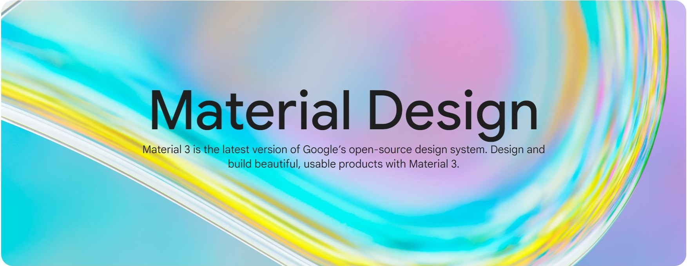
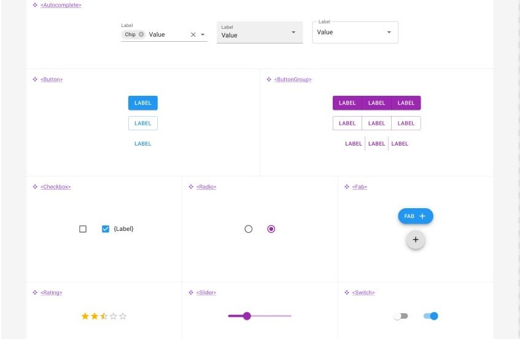
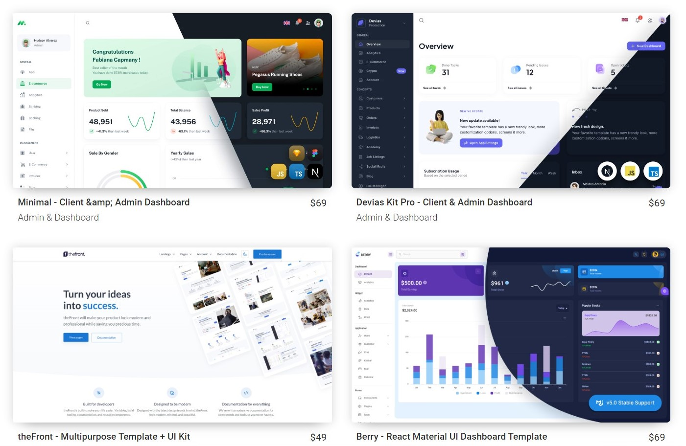
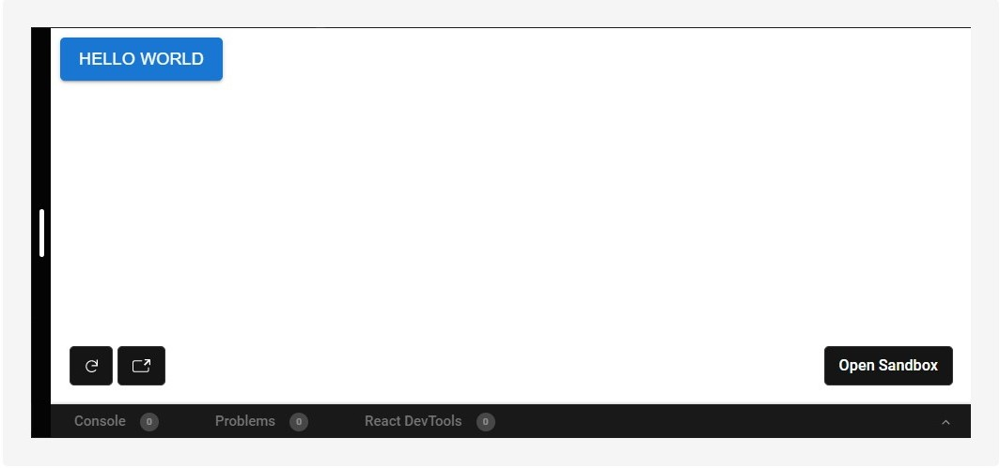
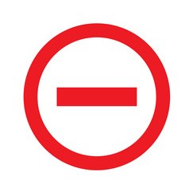

Material UI
- Established by Google
- A framework / library for React
- Based on Metarial Design concept
- Provided for free
History
Material UI (MUI) was created in 2014 as a special kit for React to unify React and Material Design. From the very beginning it offered a huge veriety of styled components, from atomic, like simple buttons, to more complex.
Now it is not only advanced and modern framework, but also a world community of users and proponents of more then 4 million people.
What is Material Design?..
- Material Design is a design system built and supported by Google designers and developers. Material.io includes in-depth UX guidance and UI component implementations for Android, Flutter, and the Web.
- The latest version, Material 3, enables personal, adaptive, and expressive experiences – from dynamic color and enhanced accessibility, to foundations for large screen layouts and design tokens.
Design of MD
- Styles: special choosen styles, that can be customized by changing Material theme.
- Adaptive design: means, that components can flixibly react on input from users and be adaptive for different devices.
- Provides Figma design kit: jumpstart designs with ready-made elements.
Material UI features
- Interoperability with styling systems
- Pre-built components
- Customizable themes
Interoperability with styling systems
One of the main advantages of Material UI is that it is interoperable with different styling systems. This interoperability means that developers can use the library with varying frameworks of CSS or even with vanilla CSS.
Pre-built components
Offering a set of pre-built components. For example:
- Dialogs: can be used to confirm an action, or to provide information about a process.
- Icons: can be used to represent different actions, or to simply add some flare to your design.
- Grids: a powerful layout tool that can be used to create complex, responsive layouts
- Typography: is an important part of any project ( a variety of options to help create beautiful, readable text)
Customizable themes
With a few lines of code, it’s possible to create your own theme or even customize individual components to get things looking just the way you want.
Look below:
import { createMuiTheme } from '@material-ui/core/styles';
export default createMuiTheme({
palette: {
primary: {
main: '#ff4400',
},
secondary: {
main: '#00bbff',
},
},
});
Customizable themes(2)
Once you’ve exported your theme object, you can import it into your application and use it by wrapping your root component in a ThemeProvider component, like this:
It’s also possible to customize individual components without having to create a whole new theme
Variants of usage
According to official web-site, MUI can be used different ways:
- MUI Core: get access to a growing list of React-components - ready-to-use and free forever.
- MUI X: allows to build complex and data-rich applications using a growing list of advanced React components.
- Templates: a collection of 4.5 average rating templates, selected and curated by MUI's team of maintainers.
- Design kits: allows to use prepared kits of components.
MUI kits and templates
Kits and templates aren`t free, but getting them means to have complete instruments for rapid web-development
MUI kits
MUI templates
Installation
Material-UI is available as an npm package.
To install and save in your package.json dependencies, run:
// with npm
npm install @material-ui/core
// with yarn
yarn add @material-ui/core
Quickstart
Here's a quick example to get started, it's literally what is needed:
Material-UI components work in isolation. They are self-supporting, and will only inject the styles they need to display. They don't rely on any global style-sheets such as normalize.css.
Result
Actual result of the example, indicated above:
The Pros
- Material-UI is an excellent library for React that offers a wide range of components and features.
- It is easy to use and well-documented, making it an excellent choice for developers of all experience levels.
- Material-UI is constantly updated with new features and improvements, making it a top choice for React developers in 2023.
The Cons
- A lack of customization options. If you want to change the look and feel of your app, you’re out of luck.
- Material-UI can be slow and buggy. There is reported slow rendering times and issues with specific components, such as buttons and inputs.
- For some cases it becomes difficult for users to look at screens that contain too much color; especially if they’re older or color blind.
Who is using Material UI
There are a lot of well-known successfull companies, using Material UI
They strive to deliver an unrivaled experience for both developers and users.